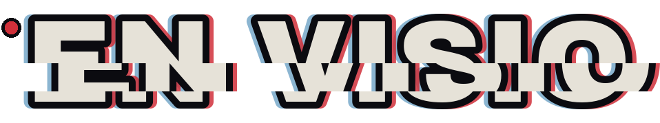
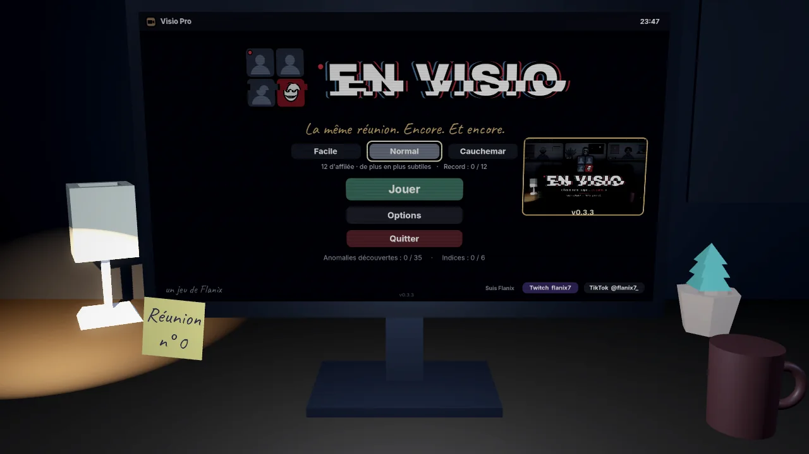
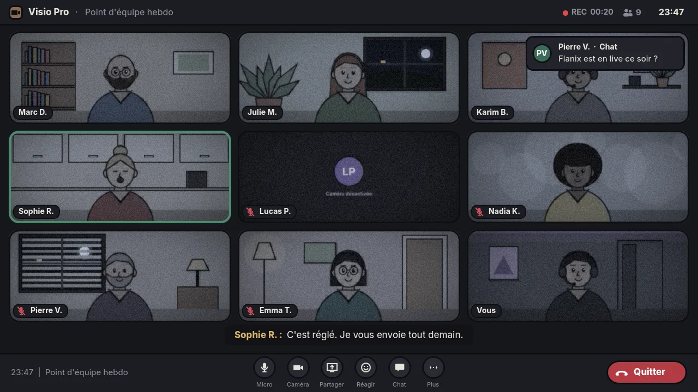
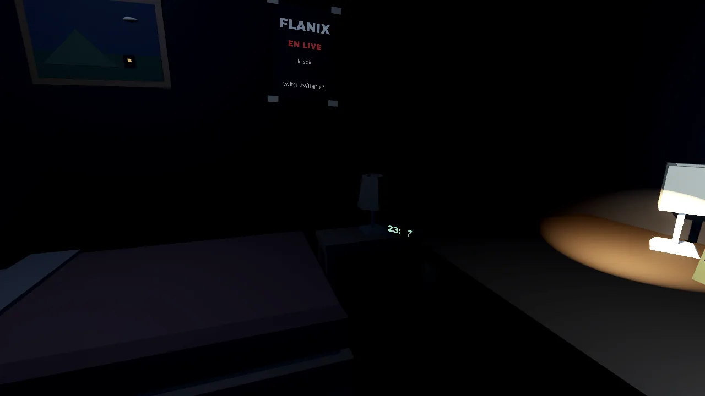
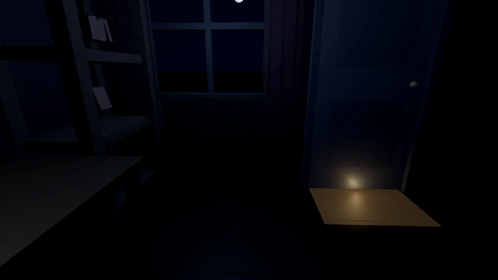
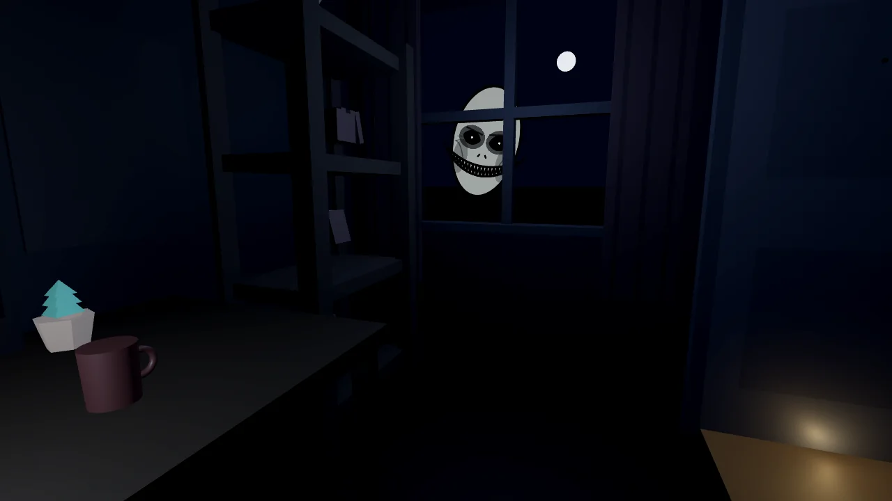
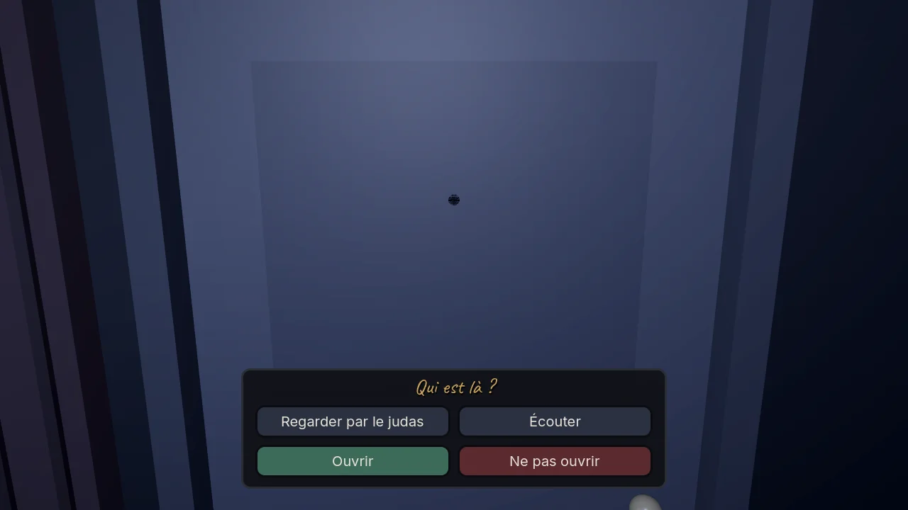
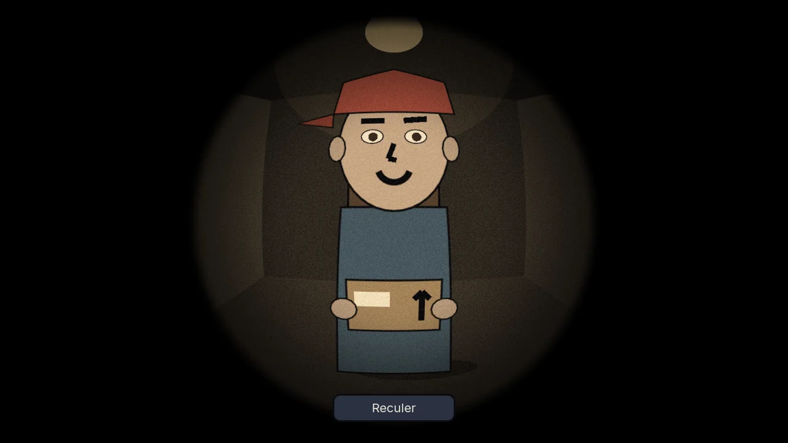
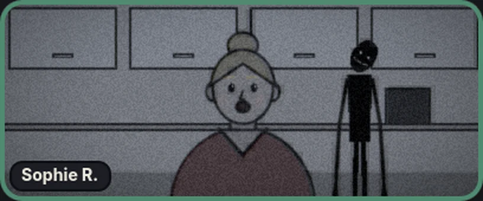

Tout est normal
Tu restes
L’appel et la chambre sont comme d’habitude. Tu laisses la réunion aller jusqu’au bout.
Flanix Games/Jeux/EN VISIO

La même réunion. Encore. Et encore.
Tu es assis à ton bureau, en appel vidéo avec tes collègues. Tout a l’air normal. Enfin… presque.
Observe bien chaque réunion : les participants, leurs visages, l’interface de l’appel, ta pièce. Tout est normal ? Reste dans l’appel. Un truc cloche ? Clique sur « Quitter ». Tu te trompes ? Retour à la case départ… et parfois, quelque chose t’attend.
PC Windows · gratuit. Le jeu se met à jour tout seul au lancement. Garde le fichier .exe et le fichier .pck dans le même dossier.
01 — Gameplay
02 — Le principe
Tout est normal
L’appel et la chambre sont comme d’habitude. Tu laisses la réunion aller jusqu’au bout.
Quelque chose cloche
Un regard, un visage, un détail dans ta pièce, une heure qui n’est plus 23 h 47 : tu cliques sur Quitter.
Erreur
Tu te trompes, le compteur retombe. Parfois, un screamer s’invite avant de recommencer.
Objectif
Facile : 8 d’affilée (une erreur pardonnée). Normal : 12. Cauchemar : 16. Plus tu avances, plus les anomalies se font discrètes.
03 — Dans le jeu
Dans la visio comme dans ta chambre. Des plus évidentes aux plus sournoises : un collègue figé, un visage à la fenêtre, une porte entrouverte.
Parfois, quelqu’un sonne. Tu regardes par le judas, tu écoutes, tu ouvres… ou pas. Un mauvais choix peut tout faire basculer.
Seulement quand tu te trompes, et pas à chaque erreur. Il y a une option pour les couper, si tu préfères.
Fait pour le live et les clips. Trois difficultés, pause avec Échap, options de volume et plein écran.
D’autres chapitres, plusieurs fins et un mode coop sont en préparation.
04 — Captures








05 — Télécharger
Le bouton ouvre la dernière version, sur GitHub. Dézippe le dossier, puis lance le fichier .exe.
Mise à jour automatique. Au lancement, le jeu vérifie s’il existe une version plus récente et peut la télécharger tout seul.
Important : le .exe et le .pck doivent rester dans le même dossier. Ne mets pas seulement l’exécutable sur le Bureau. Pour un raccourci, clic droit sur l’exe → Envoyer vers → Bureau (créer un raccourci).
Une version Android arrivera plus tard. Pas de version iPhone pour le moment.
06 — Crédits
EN VISIO est un jeu de Flanix (Allan Perez).